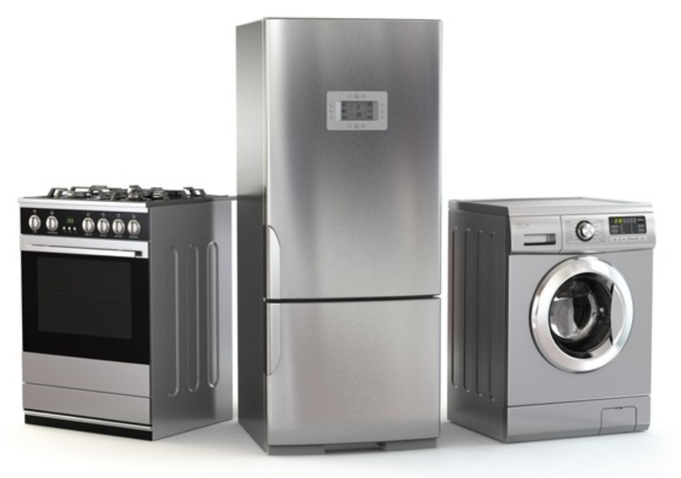
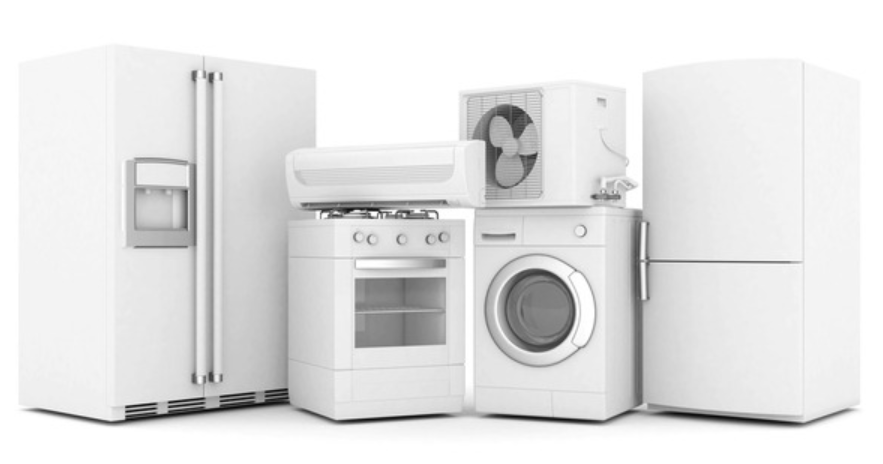
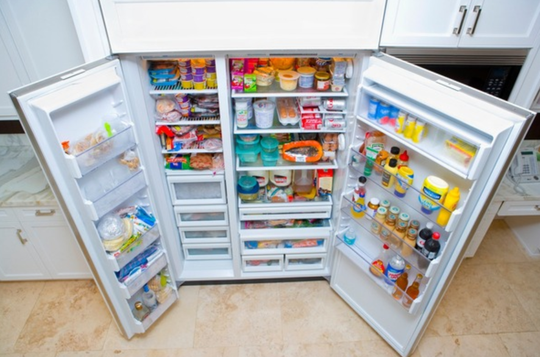
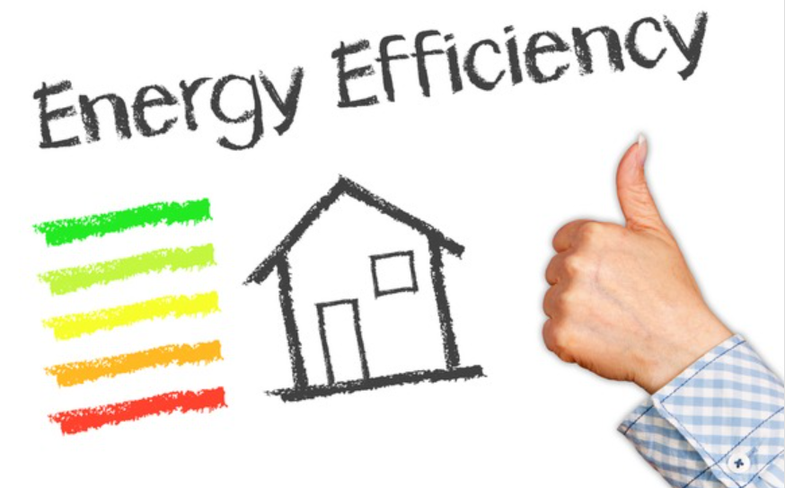

🏠 냉장고 소비전력 계산 어렵지 않게 가능!
용인 하수구막힘 전문 시공 후기

📋 작업 개요
- 위치: 용인
- 서비스 유형: 하수구막힘
- 작업 일시: 2023. 4. 7. 17:26
- 업체명: 하수구수사대 (010-5615-2118)
🔍 문제 상황
반갑습니다. 하수구수사대입니다.
각 가정에서 냉장고를 구입할 경우 냉장고 소비전력을 중요하게 고려하는 기준이 될 수 있습니다. 이것은 냉장고 겉면에 일반적으로 에너지 소비효율 등급 스티커가 부착되어 있어 쉽고 간단하게 확인이 가능합니다.
스티커 내용을 기준으로 냉장고 소비전력 계산 어렵지 않게 하는 방법을 통해 전기세를 파악할 수 있는 간단한 방법을 소개해 드릴까 합니다. 평소 알고 싶어 하셨던 분들은 오늘 알려드린 정보를 통해 가정에서 사용하고 계시는 냉장고의 전기세를 사전에 파악해 보는 시간이 되시기를 바랍니다.
보급률이 높은 가전제품 및 에너지 소비가 많은 제품을 대상으로 1등급에서 5등급까지 구분하여 에너지 소비효율등급이라는 라벨을 의무적으로 부착하는 제도를 시행 중입니다. 만약 가전제품이 5등급에 해당하게 된다면 최하 등급에 해당하여 제품을 제조 및 판매하지 못하도록 제도화하고 있습니다.

🔎 원인 분석
💡 전문가 진단: 에너지소비효율등급 1등급 제품은
에너지소비효율등급 1등급 제품은
최상등급으로 5등급인 최하 등급의 가전제품보다 일반적으로 30%~50% 정도의 전력소비를 감소시킬 수 있는 것으로 알려져 있습니다. 우리나라는 해마다 전력 부족이라는 리스크를 안고 있기에 제품을 생산할 때 전력 효율이 좋은 제품을 제조하도록 하는 제도이며 소비전력 계산을 소비자가 쉽게 가능하도록 만들어놓은 효과적은 제도라고 할 수 있습니다.
2018년 4월 에너지소비 등급 기준이 개정되어 현재 만들어지고 있는 1등급의 가전제품은 개정 이전 제품보다 에너지소비효율등급이 훨씬 좋은 제품이라고 생각하시면 되겠습니다. 그리고 부착되어 있는 에너지소비효율등급 표는 절대적인 값이 아니라는 점도 참고하셔야 할 내용입니다.
실제 전력소비는

🔧 작업 과정
가전제품에 부착되어 있는 스티커에 표기된 양보다 많은 경우가 대다수입니다. 대부분의 가전에 해당되는 내용이며 사용자의 습관이나 제품의 주변 환경에 따라 전력소비의 차이가 발생할 수 있기에 소비전력과는 별개라는 점을 유의하시면 좋습니다.
가전제품의 설치된 장소가 실내 온도와 외부 온도의 차이가 크게 발생하거나 자주 냉장고 문을 여닫는 습관을 가졌다면 소비전력이 높아지는 이유가 될 수밖에 없습니다. 시간이 경과됨에 따라 가전제품의 전력 효율은 감소될 수밖에 없기에 현재 3~4등급의 제품보다 10년 전의 1등급 제품의 효율이 더 낮을 수도 있다는 점을 기억하시기 바랍니다.
냉장고 소비전력 계산의 본격적인 내용을 살펴보겠습니다.
냉장고에 부착되어 있는 에너지소비효율등급 표에 소비 전력량이 24.9KWh/월이라고 기재되어 있다면 제품이 한 달 동안 소비하는 전력량이라고 해석할 수 있습니다. 한 달 동안 냉장고를 사용하면서 발생하는 전기세가 단순한 계산식으로 1100원으로 이해할 수 있으며 이는 기본요금과 누진세를 제외한 순수하게 도출된 전기 요금으로 생각할 수 있습니다.
전기 요금의 누진세는 보통 1부터 4구간까지 구분하여 적용되며 전기의 사용량에 따라 청구가 각각 다르게 발생할 수 있습니다. 예를 들어 가정에서 200KWh 이하로 한 달 동안 전력소비를 사용하였다면 910원이라는 기본요금에 100.6원이 KWh 당 작용되어 20,120원의 전기 요금과 전력기금 및 부가세를 포함한 전기 요금이 발생하게 됩니다.
그러나 400KWh 이상을 사용하였다고 가정하게 된다면 단순하게 2배의 소비전력을 사용하였다고 생각될 수 있지만 누진세가 적용된 전기 요금은 대략 3배 정도인 60,760원이 청구될 수 있습니다. 냉장고 소비전력 계산 방법을 이해하셨다면 최소한의 전력 사용으로 각 가정에서 누진세가 발생하는 구간을 피하셔야지 전기세 절감 효과를 획기적으로 체감할 수 있으리라 생각됩니다.

✅ 작업 완료
우리나라는 에너지 부족 국가라는 말을 많이 들어보고 자란 분들이 많으시리라
생각되기에 평소 전기코드를 사용하지 않는다면 뽑아 두시는 습관을 들이시기를 권해 드립니다.



⚠️ 하수구 배관 막힘 예방 및 관리 가이드
- ✅ 머리카락, 비닐, 물티슈 등 물에 분해되지 않는 이물질은 하수구 유입을 절대 금지해 주세요.
- ✅ 하수구 거름망을 씌우고 모여진 이물질은 주기적으로 쓰레기통에 바로 비워주셔야 합니다.
- ✅ 배관 노후가 심할 경우 이물질이 더 쉽게 걸리므로 주기적인 배관 세척(고압세척 등)을 권장합니다.
- ✅ 작업 후 1년 이내 재발 시 하수구수사대에서 무상 A/S 보증 서비스를 제공합니다.
💡 핵심 정리
- 확실한 장비 작업(내시경 점검 및 샤프트 스케일링)으로 원인을 뿌리 뽑습니다.
- 작업 후 1년 이내에 동일한 부위 재발 시 100% 무상 A/S 서비스를 보장합니다.
- 서울 · 경기 · 인천 전 지역에 24시간 언제든 긴급 출동할 수 있도록 항시 대기 중입니다.
❓ 자주 묻는 질문 (FAQ)
🚨 용인 하수구막힘 문제로 고민이신가요?
정확한 원인 진단과 확실한 시공으로 재발 없는 해결을 약속드립니다.
24시간 긴급 출동 | 서울 · 경기 · 인천 전지역 | 1년 내 재발 시 무상 A/S